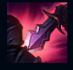
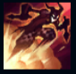
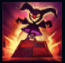
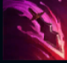
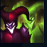

Shaco
| Shaco The Demon Jester | |
|---|---|
| Release date | 10.10.2009 |
| Class | Assassin |
| Positions | Jungle |
| Resource | Mana |
| Range type | Melee |
| Adaptive type | Physical |
| Base statistics | |||
| Health | 587 – 2022 | Mana | 297-977 |
| Health regen. | 7.5 –15.55 |
Mana regen. | 8-25 |
| Armor | 33 – 99.75 | Attack damage | 64 – 115 |
| Magic resist. | 32 – 53.25 | Crit. damage | 175% |
| Move. speed | 350 | Attack range | 125 |
Construită acum mult timp pe post de jucărie pentru un prinț singuratic, marioneta vrăjită pe nume Shaco iubește să ucidă și să provoace haos. Deși avea suflet bun odinioară, moartea stăpânului său și magia neagră l-au corupt; acum, singura lui plăcere este să-și chinuie victimele. Shaco își ucide prada cu ajutorul unor jucării și trucuri simple, iar reacțiile pe care le stârnesc ''jocurile'' sale i se par deosebit de amuzante – cei ce aud un râs misterios în toiul nopții pot deveni următoarea țintă a bufonului demonic.. |  |
LOVITURĂ PE LA SPATE Atacurile de bază și ''Otrava pe două cuțite'' ale lui Shaco provoacă daune suplimentare când atacă din spate. |
||
|---|---|---|---|---|
 |
AMĂGIRE Shaco devine invizibil și se teleportează în locația-țintă. Cât timp este invizibil, primul său atac este îmbunătățit, provocând daune bonus și lovind critic dacă atacă din spate | |||
 |
CLOVN ÎN CUTIE Shaco creează un ''Clovn în cutie'' ascuns. Când e declanșat, acesta terifiază și atacă inamicii din jur. |
|||
|  |
OTRAVĂ PE DOUĂ CUȚITE ''Cuțitele'' lui Shaco otrăvesc pasiv țintele la impact, încetinindu-le. Le poate arunca spre ținte pentru a le provoca daune și a le otrăvi. ''Cuțitul'' aruncat provoacă daune bonus, dacă ținta are sub 30% viață |
|||
 |
HALUCINAȚIE Shaco își creează o copie care apare lângă el și poate ataca inamicii aflați în apropiere. (Provoacă daune reduse împotriva turnurilor.) Când moare, copia explodează, lăsând în urmă trei mici ''Clovni în cutie'' și provocându-le daune inamicilor din apropiere |